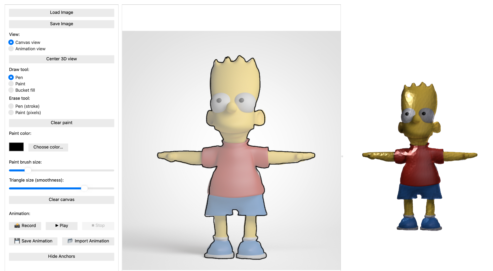

Happy Dancing Trees is a four-person recreation of Monster Mash: A Single-View Approach to Casual 3D Modeling and Animation. The project explores a more approachable way to build animated 3D forms: users draw in two dimensions, and the system turns those strokes into an inflated, deformable mesh.
The pipeline converts pixel strokes into vector curves while preserving their depth order, closes open boundaries, and uses constrained Delaunay triangulation to create a flat mesh. The front and back surfaces are duplicated and stitched together before inflation. A Poisson equation is solved with the drawn curves as boundary conditions to give the mesh volume, and ARAP-L deformation preserves depth relationships during animation.
Constrained Delaunay triangulation could add Steiner points unpredictably, which meant corresponding vertices did not always match across host and attachment meshes. Resolving these seams required more reliable attachment handling, including processing multiple attachments separately.
The original Simpsons-style drawing and the animated 3D result produced by our pipeline.
